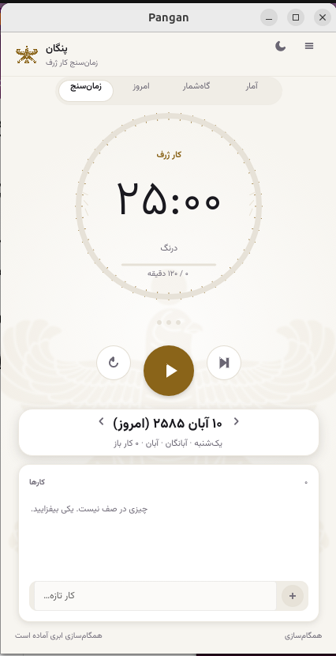
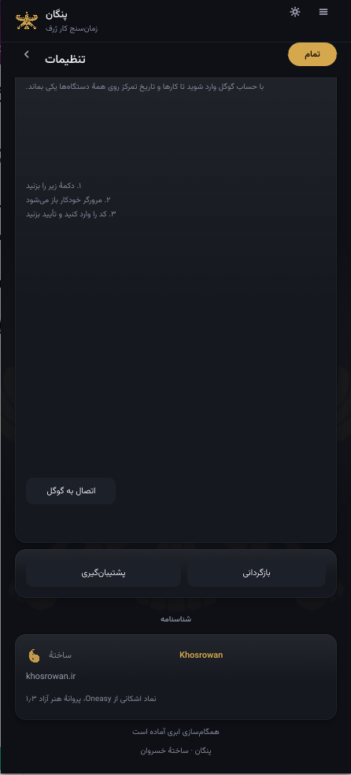
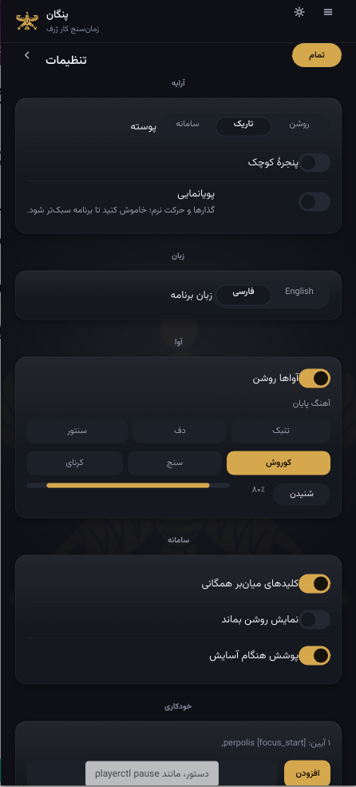

Everything you need to focus
Pangan is a complete focus and planning companion. Here's what's inside.
⏱ The focus timer
A classic Pomodoro timer with a calm, circular progress ring. Configure the length of work sessions, short breaks, and long breaks — and choose how often a long break arrives. You can auto-start the next session, or launch straight into a focus block on startup.
Every session is connected to an intention: you state what you're focusing on, so the timer measures meaningful work rather than idle time.

🎯 Daily tasks & rota
Plan your day with a task list and a rota — a rotating schedule that keeps recurring work in view. Link each Pomodoro session to a task, so your daily plan becomes a living record of what you actually accomplished.
📓 Focus journal
Pangan's journal is more than a log. It produces weekly digests that reflect on outcomes, promise quality, and the realism of your plans — not just the minutes counted. It asks the questions that help you plan better, and it re-surfaces unresolved intentions so nothing is silently dropped.
📊 Statistics
See your productivity trends across sessions, hours, and metrics. Understand your break quality, your best focus windows, and the patterns in your work — all stored locally on your device.
🎨 Historical themes
Choose a heritage era for the visual identity of the app. Each era brings its own palette and an authentic emblem — from the golden falcon of Cyrus the Great to the Sasanian Senmurv. See all themes →
📅 Persian calendar
Pangan includes a Persian Jalali calendar with Iranian historical events and Sasanian day names — culture that keeps your time meaningful. Explore the calendar →
☁️ Cloud sync
Optionally sync your data to Google Drive across devices, with backup and restore. Merging is per-record, so the same device can pull from the cloud and reconcile cleanly — even an empty device pulls your full cloud state and merges with what's already there.

🔔 Personalization & sound
Switch between light and dark appearance, choose English or Persian, and pick a procedural Iranian soundscape — santur, daf, tombak, karn, sand, or a Cyrus-inspired mix. Turn motion down or off entirely if you prefer a calmer, reduced-motion experience.
